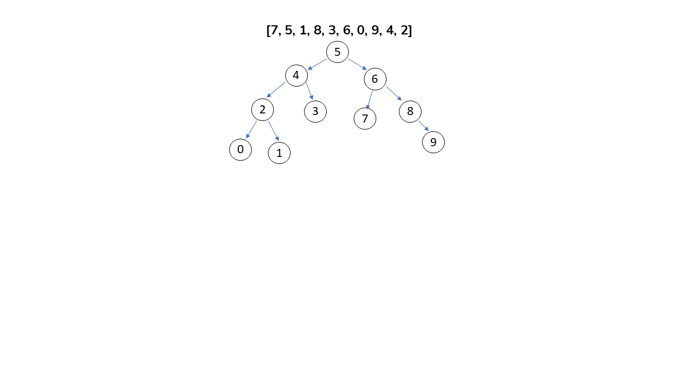

<!DOCTYPE html>
<html lang="en">
  <head>
    <meta charset="UTF-8" />
    <meta http-equiv="X-UA-Compatible" content="IE=edge" />
    <meta name="viewport" content="width=device-width, initial-scale=1.0" />
    <title>BinarySearchTree</title>
  </head>
  <body></body>
</html>
<h1>
  [7, 5, 1, 8, 3, 6, 0, 9, 4, 2] dizisinin Binary-Search-Tree aşamalarını
  yazınız. Örnek: root x'dir. root'un sağından y bulunur. Solunda z bulunur vb.
</h1>


